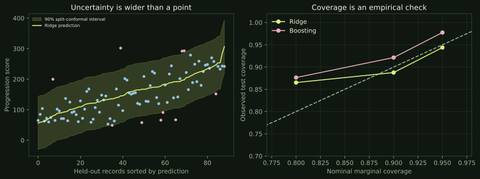

WORKING EXPERIMENT / REPRODUCIBLE BENCHMARK
A prediction needs room to be wrong.
Split-conformal uncertainty for one-year diabetes progression scores
A ridge regressor reduced held-out mean absolute error from 60.28 for a training-mean baseline to 38.54 progression-score units. Its nominal 90% split-conformal interval nevertheless had width 173.66 and covered 79 of 89 test records (88.76%). This is compatible with nominal coverage in a small test set. The experiment separates point-prediction accuracy, interval width, and the assumptions behind marginal coverage.
1. Question and data
How wide must a prediction interval be when its error allowance comes from held-out residuals instead of a model’s internal confidence? We use 442 benchmark records, each with ten baseline variables and a quantitative progression score one year later. The cohort already had diabetes. The outcome is not blood glucose, HbA1c, a new-diagnosis label, or a mortality probability. The units of the published progression score are unspecified here.
2. Leakage-free fitting
We load the unscaled dataset using load_diabetes(scaled=False), avoiding the loader’s default whole-dataset standardization. The fixed random partition is 264 training records, 89 calibration records, and 89 test records. The primary model uses train-only StandardScaler and ridge regression with alpha=10. A fixed histogram-gradient-boosting comparator uses 150 iterations, at most eight leaves, L2 regularization 10, and no early stopping. A training-mean baseline supplies context. The comparator is not selected as a winner from test performance.

3. Constructing the intervals
For each fitted predictor, we calculate the absolute calibration residuals. For miscoverage alpha, the finite-sample rank is ceil((n_cal+1)×(1−alpha)); q is that order statistic. Each test interval is prediction ±q. No interpolation or test residual enters the quantile. We prespecify nominal coverages 80%, 90%, and 95%, and do not clip intervals to the observed outcome range. Under exchangeability, the guarantee concerns marginal coverage of a new record. It does not guarantee the same coverage for each individual or every subgroup.
4. Recorded results
Ridge MAE is 38.54 (95% test-row bootstrap interval 32.47–44.94), RMSE 50.09, and R² 0.484. Boosting MAE is 39.76; training-mean MAE is 60.28. The ridge 90% half-width is 86.83 score units. Observed coverage is 79/89, with a Wilson 95% interval 80.54%–93.78%. The small shortfall from 90% is not a demonstrated coverage failure; 90% lies inside this interval.
| Model | MAE | RMSE | R² | 90% coverage |
|---|---|---|---|---|
| Training mean | 60.28 | 70.02 | -0.008 | Not evaluated |
| Ridge · primary | 38.54 | 50.09 | 0.484 | 88.76% |
| Boosting · comparator | 39.76 | 51.51 | 0.454 | 92.13% |
5. Does everyone get the same coverage?
The output also records exploratory coverage for BMI strata split at the training median (25.60). For ridge, lower-BMI test records had 41/47 covered and higher-BMI records 38/42. These small strata and their Wilson intervals are descriptive. Marginal conformal validity is not a subgroup-fairness guarantee. Constant-width intervals also ignore possible variation in residual scale across the feature space.
6. Interpretation and next study
The numerical prediction beat a simple baseline, while honest uncertainty remained broad. That combination is normal: improving average error does not make each case precise. A later study could compare prespecified locally adaptive or conformalized quantile intervals using a separate evaluation cohort. It would need to assess distribution shift, interval usefulness, and subgroup behavior. This benchmark does not validate a medical decision or a progression forecast for a new patient.
Reproducibility and provenance
Seed 20261113. Numerical outputs are stored in results.json, including split row indices, prediction-level records, dataset hashes, intervals, and environment versions. The source package includes the analysis protocol, fitting code, figure code, this report, and source attribution. Run the supplied commands to reproduce the analysis. Parameters were fixed before evaluation; an independent audit corrected augmentation weights and all-column indicators before interpreting results.
References
- scikit-learn. Diabetes dataset documentation and raw-variable option.
- Efron, Hastie, Johnstone, Tibshirani. Least Angle Regression. Annals of Statistics, 2004. Source study for the diabetes benchmark.
- Lei et al. Distribution-Free Predictive Inference for Regression. JASA, 2018.
- Angelopoulos and Bates. A Gentle Introduction to Conformal Prediction and Distribution-Free Uncertainty Quantification.